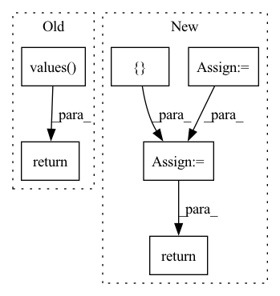

Pattern ID :25376
Before Change
datasets = [
d()
for d in {
**BASE_DATASETS,
**TORCH_DATASETS,
**TF_DATASETS,
}.values()
]
if tags is not None:
if type(tags) != list:
tags = [tags]
if all:
datasets = [d for d in datasets if _has_all_tags(d, tags)]
else:
datasets = [d for d in datasets if _has_any_tags(d, tags)]
dataset_names = [d.name for d in datasets]
return dataset_names
def list_downloaded_zoo_datasets(base_dir=None):After Change
all_datasets = _get_zoo_datasets()
datasets = {}
for source in sources:
for name, zoo_dataset_cls in all_datasets.get(source, {} ).items():
if name not in datasets:
datasets[name] = zoo_dataset_cls
if tags is not None:
if etau.is_str(tags):
tags = {tags}
else:
tags = set(tags)
datasets = {
name: zoo_dataset_cls
for name, zoo_dataset_cls in datasets.items()
if tags.issubset(zoo_dataset_cls().tags)
}
return sorted(datasets.keys())
def list_downloaded_zoo_datasets(base_dir=None):In pattern: SUPERPATTERN
Frequency: 3
Non-data size: 6
Instances Fragment ID: 77593880
Project Name: voxel51/fiftyone
Commit Name: afd041dc3830ad296337394efc4a5601cf8aaad7
Time: 2023-01-13
Author: brimoor@umich.edu
File Name: fiftyone/zoo/datasets/__init__.py
M Class Name: AnonimousClass
N Class Name: AnonimousClass
M Method Name: list_zoo_datasets(2)
N Method Name: list_zoo_datasets(2)
M Parent Class:
N Parent Class:
M File Name: fiftyone/zoo/datasets/__init__.py
N File Name: fiftyone/zoo/datasets/__init__.py
M Start Line: 76
M End Line: 109
N Start Line: 64
N End Line: 91
Before Change
"matrix and replacement-row must share the same column number."
row = row.unsqueeze(0)
if not row.is_sparse:
row = row.to_sparse()
if not row.is_coalesced():
row = row.coalesce()
// delete existing indices we dont want
new_indices = matrix.indices()[
:, matrix.indices()[0, :] != row_index]
new_values = matrix.values() [
matrix.indices()[0, :] != row_index]
replacement_row_indices = torch.stack(
[ torch.tensor(row_index, device=matrix.device) = torch.cat([new_indices, replacement_indices], -1)
new_values = torch.cat([new_values, row.values()], -1)
new_matrix = torch.sparse_coo_tensor(
new_indices, new_values, size=matrix.shape,
dtype=matrix.dtype, device=matrix.device)
return new_matrix
if __name__ == "__main__":After Change
)
result = torch.sparse.mm(removal_matrix, matrix) \
+ addition_matrix
return result
if __name__ == "__main__": Fragment ID: 77593892
Project Name: v0lta/pytorch-wavelet-toolbox
Commit Name: ced7891d6e879825d3e5dc0d52e2c7fb08b22440
Time: 2021-09-27
Author: moritz@wolter.tech
File Name: src/ptwt/sparse_math.py
M Class Name: AnonimousClass
N Class Name: AnonimousClass
M Method Name: sparse_replace_row(3)
N Method Name: sparse_replace_row(3)
M Parent Class:
N Parent Class:
M File Name: src/ptwt/sparse_math.py
N File Name: src/ptwt/sparse_math.py
M Start Line: 82
M End Line: 107
N Start Line: 82
N End Line: 105
Before Change
def forward_stage_features(self, x: torch.Tensor) -> List[torch.Tensor]:
Return only hooks features.
x = self.forward(x)
return list(self._feature_hooks.get_output(x.device).values() )
def init_weights(self):
Initialize weights.After Change
hooks_features: Hooks outputs.
last_features = self.forward(x)
hooks_features = self._feature_hooks.get_features(x.device)
hooks_features = list(hooks_features.values())
hooks_features = [ xreturn last_features, hooks_features
def get_output_hooks_channels(self) -> List[int]:
Generate hooks output channels numbers. Fragment ID: 77593858
Project Name: eora-ai/torchok
Commit Name: 3386b384b694ec7c5788d61f2968f1c2727df369
Time: 2022-05-05
Author: rashit.bayazitov.1995@gmail.com
File Name: src/models/base_model.py
M Class Name: BaseModel
N Class Name: BaseModel
M Method Name: forward_stage_features(2)
N Method Name: forward_stage_features(2)
M Parent Class: nn.Module
N Parent Class: nn.Module
M File Name: src/models/base_model.py
N File Name: src/models/base_model.py
M Start Line: 166
M End Line: 167
N Start Line: 174
N End Line: 178